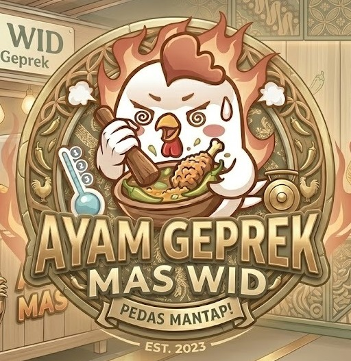
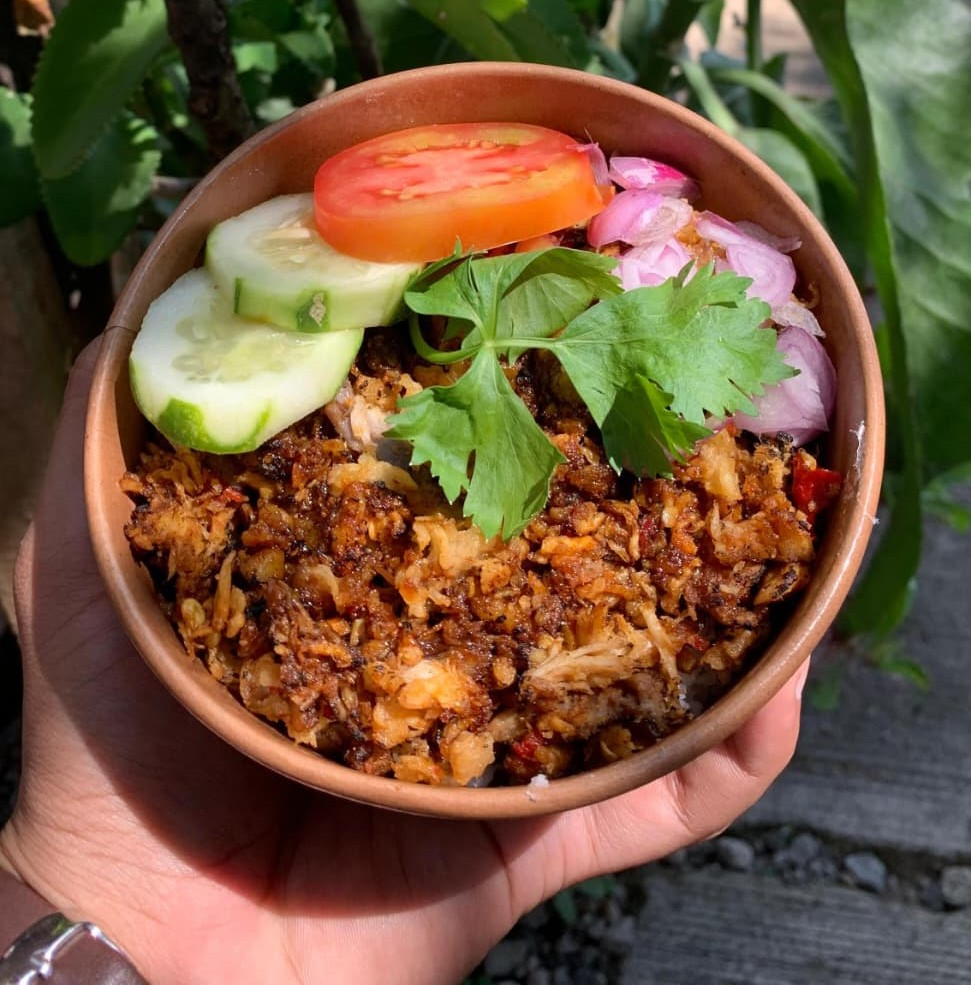
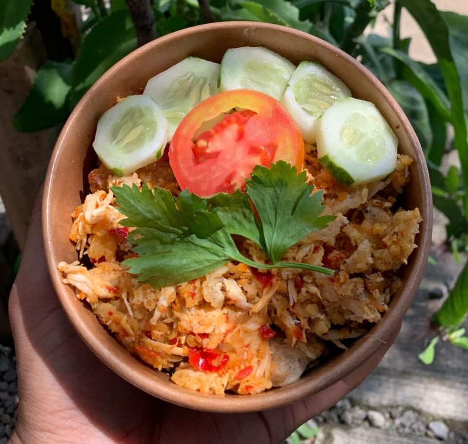
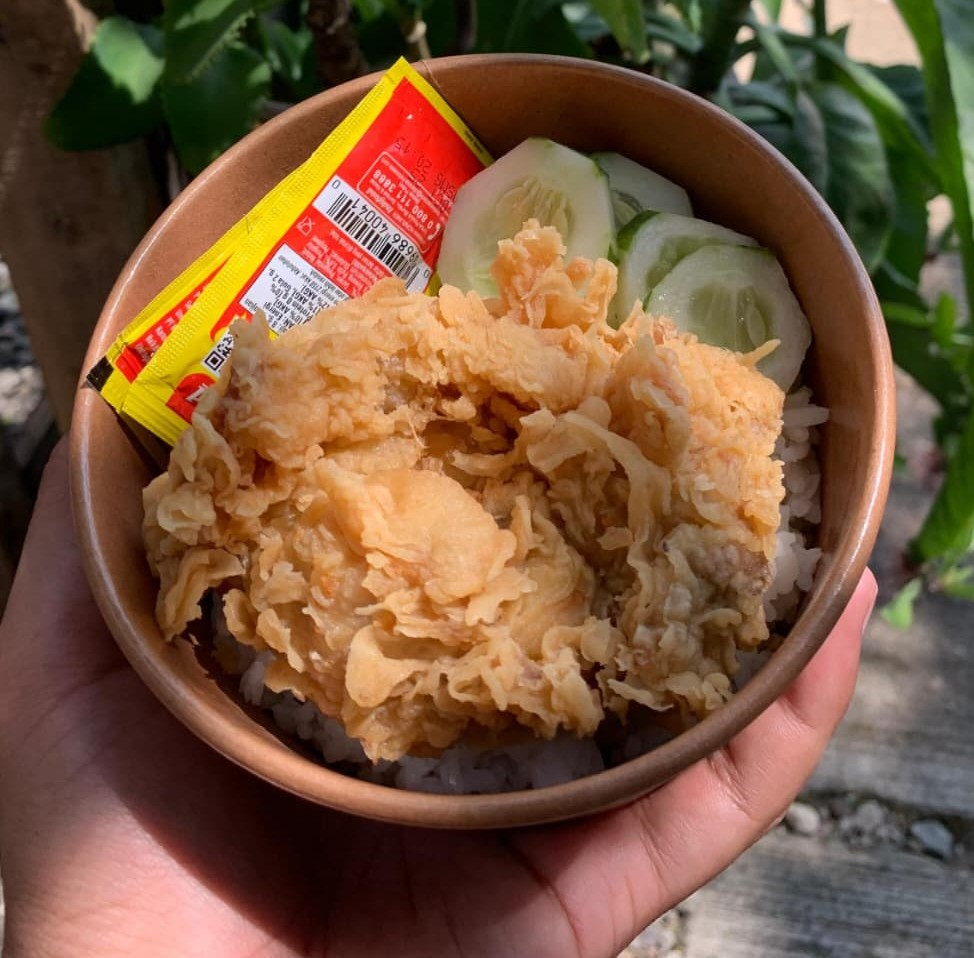

(karena sebelah nggak jualan ayam geprek)
Laper parah tapi dompet lagi mode hemat? Tenang, Ayam Geprek Mas Wid solusinya. Kamu bisa nikmati porsi ngenyangin yang ramah di kantong, lengkap dengan Sambal racikan khas yang pedasnya bikin melek. Nggak perlu drama nunggu lama sampai bad mood, karena pesananmu disiapkan sat-set dan langsung siap santap.
Tunggu apa lagi? Yuk, pesan porsimu sekarang!

Digeprek brutal, dibumbui spesial, terus di-toast biar dapet efek smoky yang menggoda. Wanginya bikin tetangga sebelah ikutan laper!

Ayam krispi digeprek hancur bersama cabai asli pilihan. Pedasnya beneran, krispinya dapet, bukan cuma janji manis kayak mantan.

Bebas pilih bagian favoritmu dari dada, paha, sampai sayap. Kulitnya krispi kriuk parah, dagingnya juicy, porsinya anti-pelit!
"Gepreknya beneran sat-set pas laper melanda! Sambalnya nampol bikin nagih, pas banget di kantong mahasiswa."
"Awalnya ketawa liat taglinenya, pas dicoba emang beneran enak. Gak nyesel langganan di Mas Wid!"
"Porsinya ngenyangin banget, ayamnya krispi dan bumbunya meresap. Sukses terus Mas Wid!"
Cinderejo RT.01/RW.02, Jatisari, Jatisrono, Wonogiri, Jawa Tengah, Indonesia
Suka pedasnya Ayam Geprek Mas Wid tapi takut perut melilit? Kuncinya adalah jangan kosongkan lambung sebelum makan, serta siapkan segelas es susu atau teh hangat sebagai penetralisir alami capsican cabai!